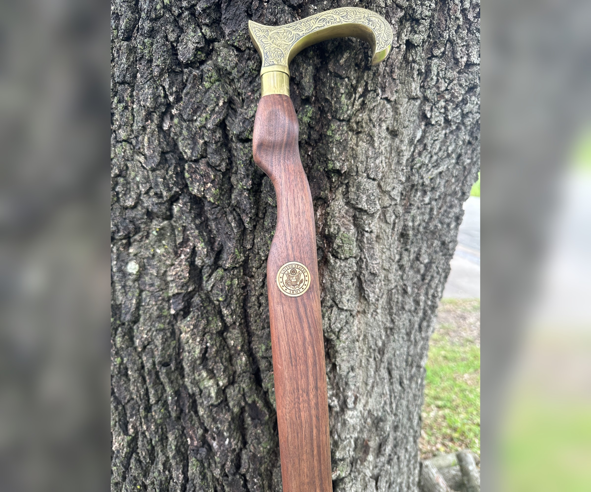
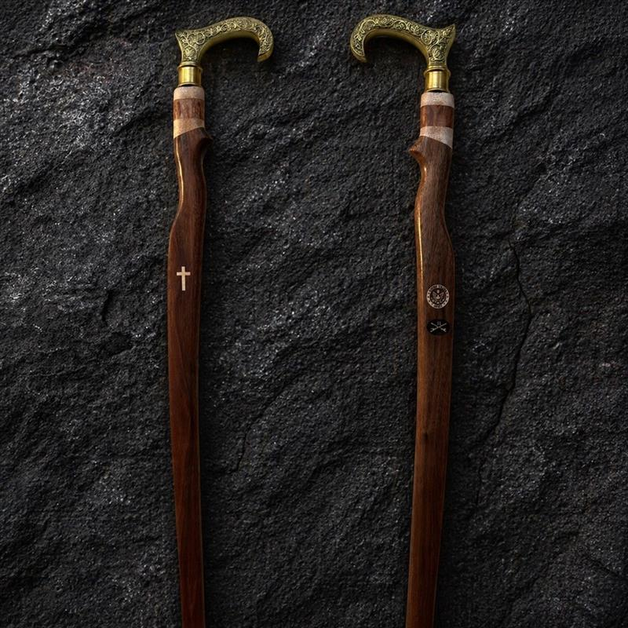
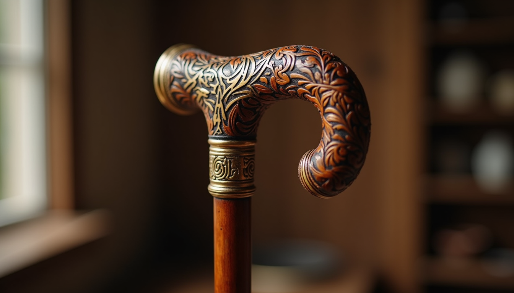
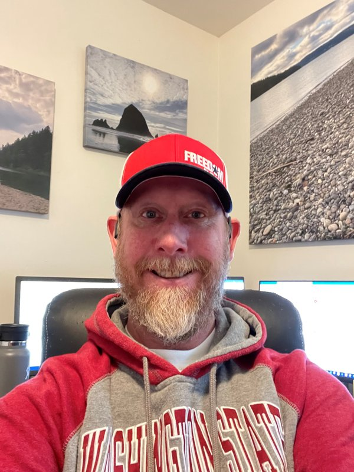

Every cane is custom-built, free of charge, and delivered to your door. We also walk with veterans through the VA benefits process — because no one should navigate it alone.
Three simple steps. No cost, no catch, no red tape.
Fill out a short intake form with your service details and customization preferences.
Handmade from select hardwoods with custom details. Build timeline dependent on the number of veterans ahead of you.
Shipped directly to your door at no cost. Materials, labor, and postage are all donor-funded.
Every piece is one of a kind. Built by hand, finished with care.

Danish oil finish · Decorative brass fittings

Natural finish · Classic profile

Hand-finished · Ergonomic grip

The Veteran Promise Project began with a simple belief: every veteran who needs a cane should carry one that honors their service — not a generic aluminum pole from a medical supply catalog.
Shanon Ryan handcrafts each cane from premium hardwoods, adding custom details like brass fittings, laser engravings, and finishes chosen by the veteran. Every cane is built at no cost to the recipient.
Beyond the workshop, the project helps veterans navigate the VA benefits system — walking alongside them through claims, appeals, and the maze of paperwork that too many veterans face alone.